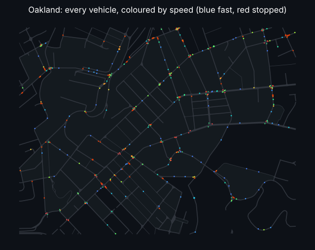

Start here · ~1 min on a laptop CPU
A five-minute tour
The whole repository in one sitting: many copies of a city in one compiled call, what it looks like, how many AVs it takes to halve crashes, and your own driver scored on AVBench.
- av_world.make, reset, rollout
- the city map with every vehicle
- an AV-share miniature
- a 15-line policy on AVBench